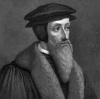

Katolik Fransa’da doğan teolog John Calvin (1509-1564), Protestan reformunun liderlerinden biri olarak tanınmıştır. Sonunda Fransa’dan ayrılmış ve Protestan toplumunun lideri ve güçlü bir politik figürü haline geleceği İsviçre’deki Cenevre’ye yerleşmiştir. Protestanlığın bir kolu olan Calvinizm onun öğretilerinden esinlenmiştir. Bu inanç zamanla Avrupa ve Amerikan tarihinin en önemli dini güçlerinden biri haline gelecektir.

Calvin, Paris’in kuzeyindeki Novon şehrinde dünyaya geldi. Babası dindar bir Katolik ve Noyon Katedrali’nin yöneticisiydi. Babası, oğlu henüz on dört yaşındayken onu retorik, mantık ve gramer öğrenmesi için Paris’teki Sorbonne Üniversitesi’ne gönderdi. 1528 yılına gelindiğinde Almanya’da Martin Luther’in (1483-1546) başlattığı Reform hareketi sessizce Fransa’da da yayılmaya başlamıştı. Calvin’in okul arkadaşlarından çoğu Reform’a sempati besliyordu. Arkadaşlarına yönelen şüpheler nedeniyle Calvin 1532 yılında Paris’ten ayrılmak zorunda kaldı. Ancak 1536 yılına kadar Katoliklik’ten vazgeçmeyecekti.
Kaçtığı süre içerisinde Institutes of the Christian Religion’ı (Hıristiyan İnancının Temelleri) yazmaya başladı. Bu kitapta reformcu görüşlerini özetliyordu. Luther’e büyük ölçüde sempati beslese de bazı noktalarda ondan farklı düşünüyordu. Örnek vermek gerekirse Calvinistler, kadere inanıyorlardı. Onlara göre Tanrı kimin cennete gideceğini önceden belirlemişti. Lutherciler ise insanların kendi inançları sayesinde ilahi kurtuluşa kavuşabileceği düşüncesindeydiler.
Calvin 1541 yılında büyük ama tedirgin durumdaki bir Protestan cemaatine ev sahipliği yapan Cenevre’ye davet edildi. Şehirde neredeyse diktatöryal denilebilecek bir güce sahip oldu. Consistory (Kilise Meclisi) adı verilen bir dini mahkeme kurdu. Bu kurum, dans etmek ya da aile içi şiddet gibi ahlaki meselelerde bile ceza verebilecek bir güce sahipti. Onun yönetimi altındaki şehirde diğer mezheplere mensup muhalif kişiler baskı ve işkence gördü. Cadı olduğu söylenen düzinelerce kadın öldürüldü. Michael Servetus (1509-1553) isimli ünlü bir “sapkın”ı kazığa bağlayıp yaktırarak idam ettirdi.
Calvin hayatının son on yılında kandaki ürik asit miktarının anormal bir düzeye ulaşmasından kaynaklanan gut hastalığı nedeniyle ızdırap çekmeye başladı. Elli dört yaşındayken Cenevre’de öldü. Görüşleri Presbitaryenler, Reformcu Alman Kilisesi ve İngiliz Püritenleri gibi pek çok dini grubu etkiledi.
Ek Bilgiler
1- John Calvin, ünlü vaizin Latince ismi olan Ioannis Calvinus’un İngilizce versiyonudur. Fransa’da ona doğduğu sırada ailesi tarafından verilen isim ise Jean Cauvin’di.
2- Calvin’in ilk kitabı, Romalı filozof Seneca’nın (MÖ 4-MS 65) eseri “De Clementia”nın çevirisidir. Çeviri 1532 yılında Paris’te yayınlanmıştır.
3- Calvin, Bill Watterson’un (1958-) “Calvin and Hobbes” (Calvin ve Hobbes) adlı çizgi filmindeki karakterin isim babasıdır. Diğer karakter olan oyuncak kaplan Hobbes ise adını İngiliz filozof Thomas Hobbes’tan (1588-1679) almıştır.